NPRG086: Functions, trees, processes
Functions from the programming perspective
Tomáš Petříček, 204 (2nd floor)
petricek@d3s.mff.cuni.cz
@tomasp.net
https://tomasp.net

Functions
Background
Functions
History of mathematics
- Leibniz (1680s) - Functions live on a curve
- Euler (1748) - Functions as an analytical formula
- D'Alambert (1747) - Plucked string outside math
- Fourier (1810s) - Heat and combination of sines
- Dedekind (1888) - Mapping between collections
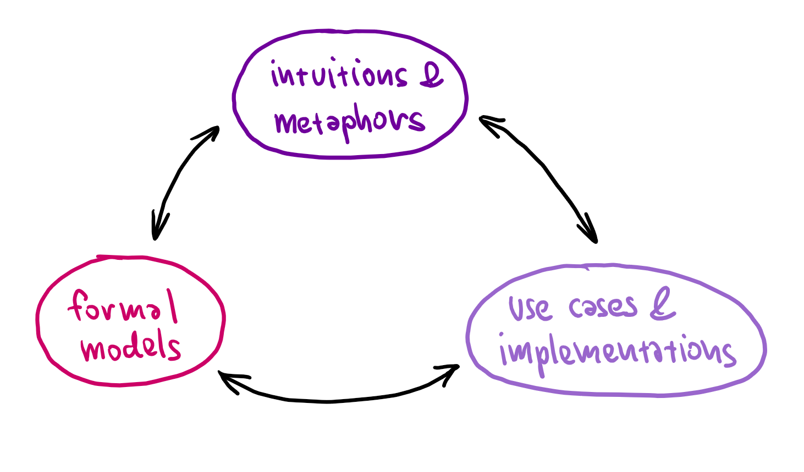
How entities evolve
Three levels
Intuitions
Formalisms
Implementation
Concepts exist at
all three levels
When one changes
others adapt
Interactions in mathematics
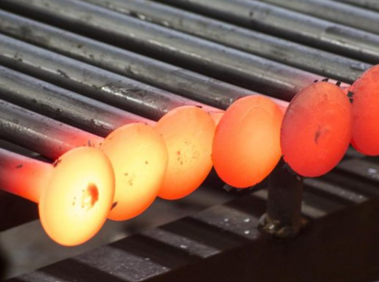
Geometric motivation
- Intuitive idea about functions
- Leads to first definition attempts
Physics challenges
- Plucked strings and heat
- Needs more than smooth functions!
- Function as a mapping
Functions
Early machines
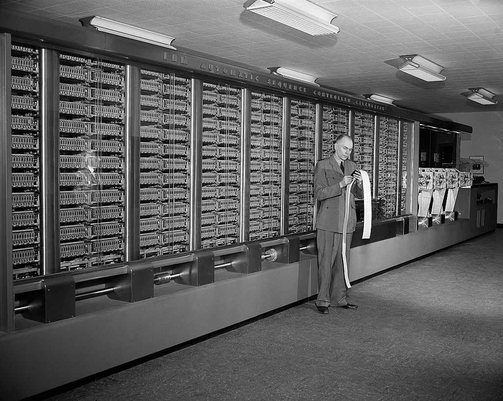
Harvard Mark 1 ASCC (1944)
Electromechanical general purpose computer
Reads instructions from a punched tape
Synchronized by 15m rotating drive shaft
Programming the ASCC (1944)
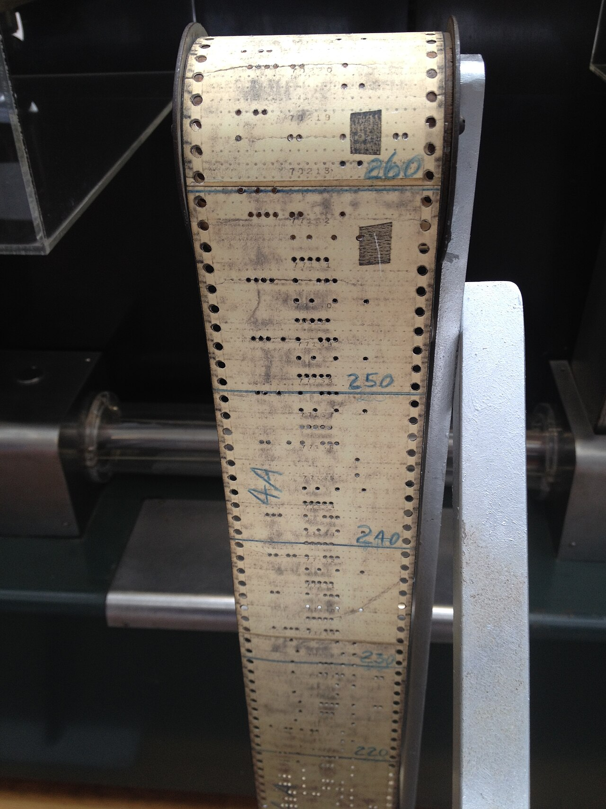
Iteration and loops
- Load a starting tape
- Then endless tape (physical loop)
Reusable sequences
- Implementing a function
- Held on physically different tapes
Subsidiary sequence control
- Automating program execution
- Commands to switch control between units
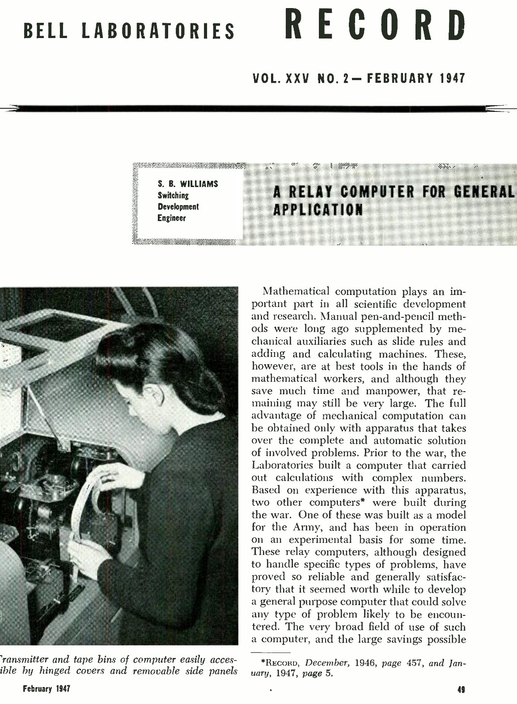
Bell Labs Relay machines (1947)
Routine tapes
Usually endless loops of instructions that transfer control at the end
"The solution of an equation in general requires reference to tables of functions, trigonometric, logarithmic, etc."
Programming the ENIAC
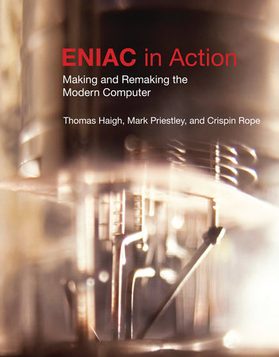
Initial configuration (1945)
- Programmed by plugging cables!
- 3 function tables store 104 entities
- can be set up for interpolation routines
- A report mentions sub-routine
After reprogramming (1948)
- Interprets instructions
- Monte Carlo simulation using a closed subroutine (via control transfer)
Curry's theory of program composition (1948-50)
Principal bottleneck is the planning of the computation [...] Ways of shortening this process, and of systemizing it, so that a part of the work can be done by the technically trained personnel or by machines, are much desired. The present report is an attack on this problem from the standpoint of composition of computing schedules [...] This problem is here attacked theoretically by using techniques similar to those used in some phases of mathematical logic.
Prefigures many later ideas, but not modern terms
- Calculus of program composition
- Substitution with address adjustment
EDVAC and ACE computers
EDVAC (1949)
Mauchly, Eckert, von Neumann, First Draft 1945
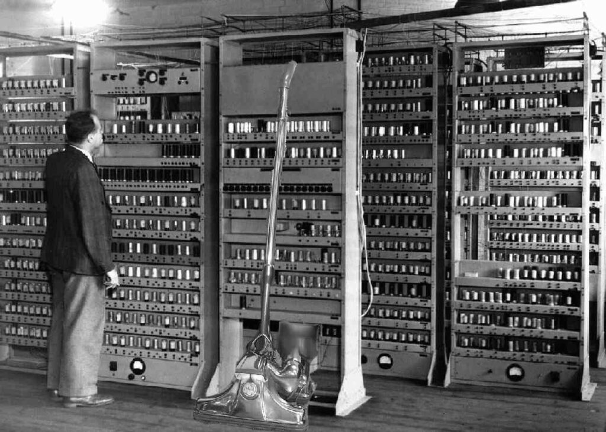
ACE (1950)
Automatic Computing Engine, designed by Turing in 1945
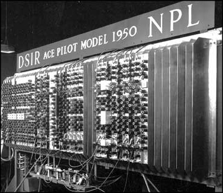
Engineering vs. logic foundations
[W]hereas von Neumann set out to design an automatic calculator, Turing was more concerned to produce a practical version of the universal machine.
The ACE (...) maintained a strict distinction between memory and control reminiscent of the universal machine, whereas the EDVAC complicated this (..) with special-purpose units.
(from Priestley's Science of Operations)
Programming the ACE (1945)
Subsidiary operations and BURY/UNBURRY
When we wish to start on a subsidiary operation we need only make a note of where we left off the major operation and then apply the first instruction of the subsidiary.
When the subsidiary is over we look up the note
and continue with the major operation.
the burying being done through a standard instruction table BURY, and the disinterring by the table UNBURY.
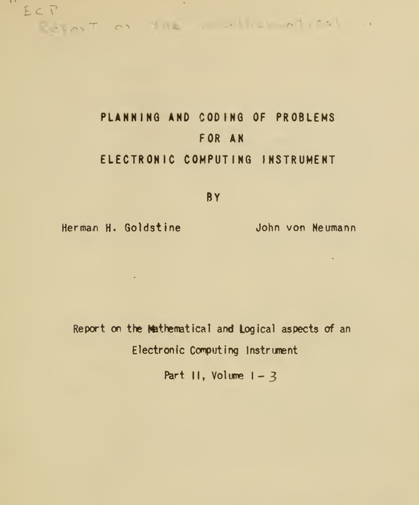
Planning and Coding report
Started while ENIAC was still programmed by plugging cables
Later parts after ENIAC reprogramming & Manchester Baby
Envisions a lot of later programming
Subroutine terminology
Preparation of Problems for EDVAC-Type Machines (Mauchly, 1947)
... even fairly elementary processes should be made a matter of subroutine. (...) those of any complexity presumably ought to be in a library - that is, a set of magnetic tapes
Planning and coding of problems for an electronic computing instrument (1947)
We call the coded sequence of a problem a routine, and one which is formed with the purpose of possible substitution into other routines, a subroutine. (...) properly organized automatic, high speed establishment will include an extensive collection of such subroutines (...) i.e. a "library"
Mathematical and logical influences
Bound variable
- "assumes a sequence of different values in the course of the procedure"
- impossible to set from the outside
Free variable
- fixed throughout the procedure, essentially a parameter
- a value has to be substituted for it
"Borrowed from formal logic"
EDSAC (Cambridge)
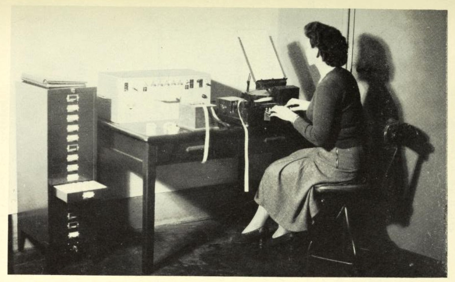
Second edition report (1951)
... a mathematical calculation usually requires an extended sequence of orders. It is often convenient to break up this sequence of orders into self-contained groups of orders called subroutines.
Rewriting addresses
The written and punched form is called the external form, and the form inside the machine the internal form.
Open vs. closed subroutines
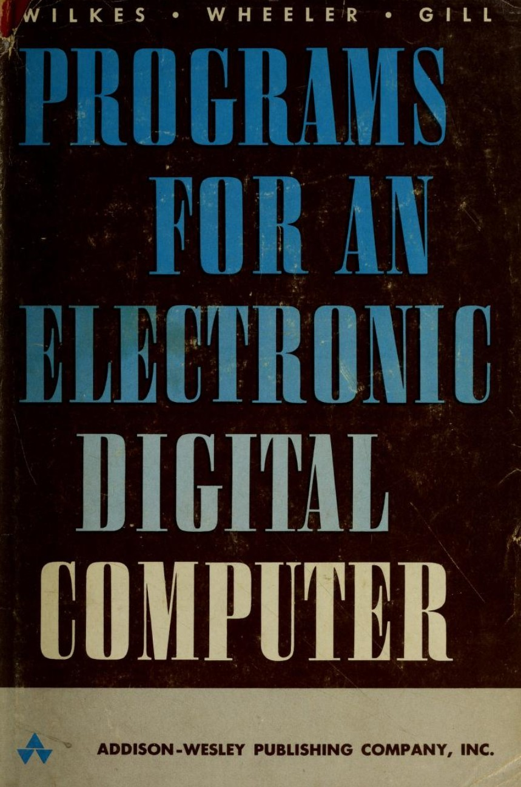
Open subroutine
Entered immediately after the execution of the order coming before it (...) control passes to the order immediately following it.
Closed subroutine
Placed anywhere in the store, entered by a jump order and left by another jump order
Interpretive subroutines
Order code different from the basic order code of the machine. Extracted one by one, by the interpretive subroutine, which examines them, and carries out the appropriate operations.
Early machines
- Subroutines implementing functions (since 1947)
- Links to logic (Curry, von Neumann) but not functions
- Library of functions as intuitive metaphor
- Engineering concerns about address rewriting
- Numerical analysis of computation processes
Functions
From FORTRAN to Algol
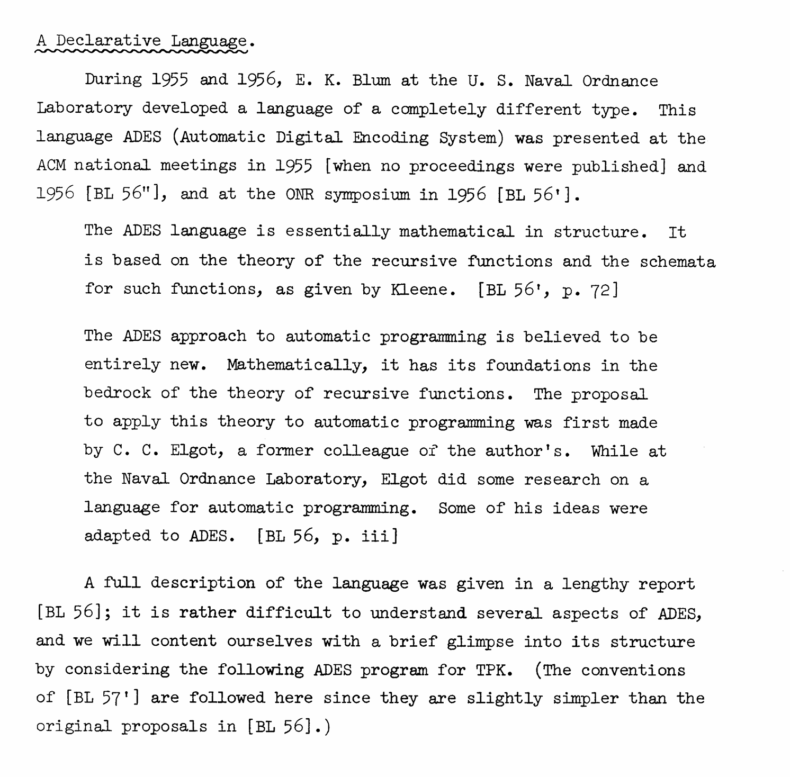
Automatic Digital Encoding System
Recursive functions theory of Kleene
Left Polish notation
Before FOTRAN, but largely forgotten
Functions in FORTRAN
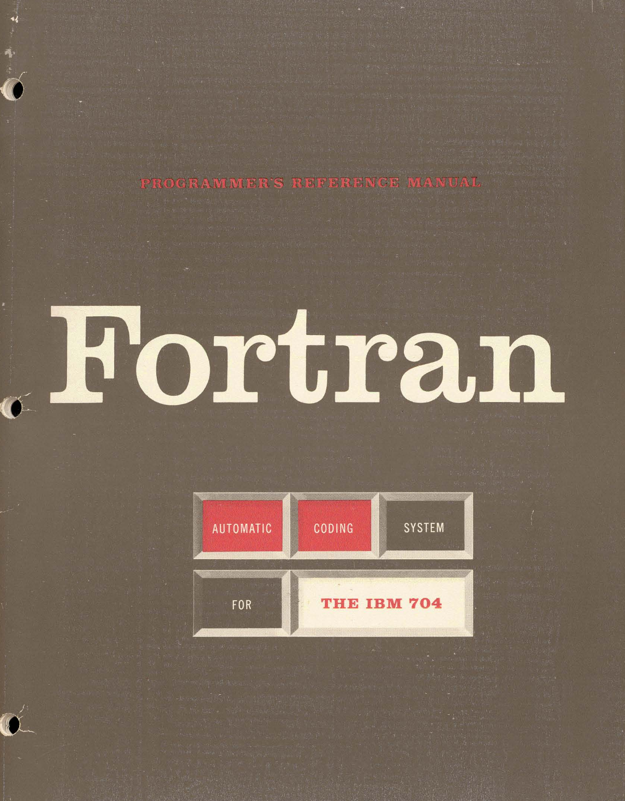
FORTRAN report (1954)
- Control formulas (goto), IO formulas
- List of functions but no subroutines
FOTRAN for IBM 704 (1956)
- "Pre-written routines to evaluate any single-valued functions of any number o f arguments"
- Library .. on the master tape in relocatable form
FORTRAN II (1958)
- Subroutines (
SUB DEF) called usingCALLstatement - Functions defined by formula, or subprogram (
FUNCTION)
Procedures and functions in Algol
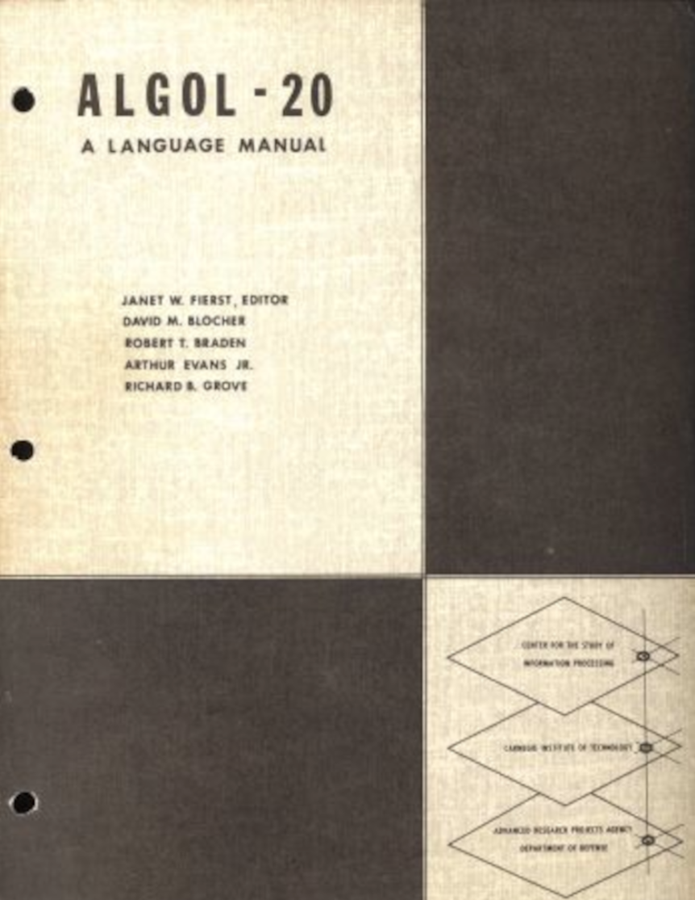
Preliminary report (1958)
- Function definition (
=expr), call is expression - Procedures (
PROCEDURE) call is a statement
Revised Algol 60
- Unified procedures and functions (return)
- Many calling conventions and recursion make it hard!
Restrictionists vs. Trickologists
"The mathematical concept of a function as a mapping from domain to range ... which absolutely excludes any kind of so-called side effects."
Functions
In early programming languages
- Subroutine terminology slowly abandoned
- Function becomes sequence of instructions
- Distinction between functions vs. procedures
- Mathematical ideas, worry about side effects
Functions
From CLP to C
CPL programming language (1963)
Functions and routines
- Function (named expression), routine (command sequence)
- A function defined with
≡uses its free variables directly (by reference), one defined with=has them evaluated ... (by value).
Logical influence
- Designers include Strachey and Landin (c.f. semantics)
- Explicit reference to Church and \(\lambda\) calculus (
whereclauses) - "...the results of functions may be lists, arrays and functions themselves, but not routines." (1963)
First-class functions (Strachey)
Fundamental Concepts in Programming Languages (1967)
Procedures in ALGOL are second class (...) we can write:
(if x > 1 then a else b) + 6We cannot correctly write:
(if x > 1 then sin else cos)(x)nor can we write a type procedure (ALGOL’s nearest approach to a function) with a result which is itself a procedure.
History
From CPL to BCPL and B
-
CPL (1963) Cambridge Programming Language
Slow to be implemented - returning functions is hard! -
BCPL (1967) Basic Combined Programming Language
Drops closures; uses only 'functions', no routines -
B (1969) - Thompson & Ritchie
BCPL subset with new syntax; only function definitions
Evolution from CPL to C
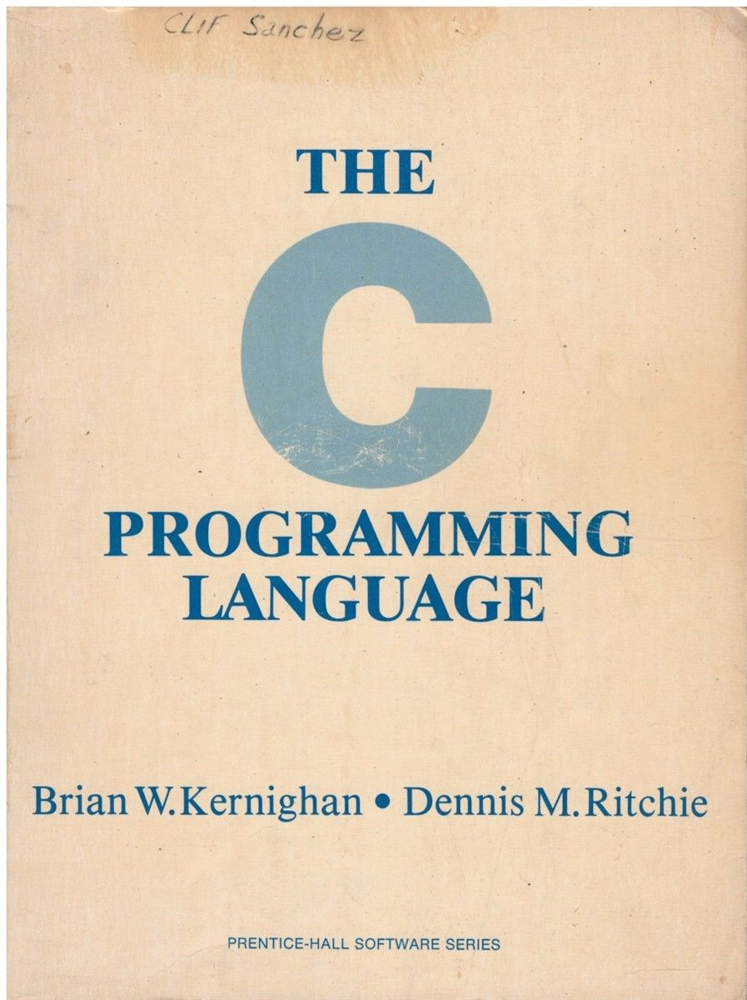
Logical influence in CPL
- Direct links to lambda calculus
- Strachey's work on semantics
- Variable capture, first class
Implementation wins in C
- Simplification process (CPL, BCPL, B)
- First-class functions become pointers
- Routines become also functions
Functions
Early observations
Early observations
-
Routines develop on implementation level
Subsidiary sequences, open/closed sub-routines -
Initial intuition from mathematics
Subroutines implement math functions -
Meaning of concepts change
Functions equated with subroutines over time -
Implementation forces simplifications
First-class functions and other ideas abandoned -
Formal level exists throughout
Recursive function theory, variable handling, etc.